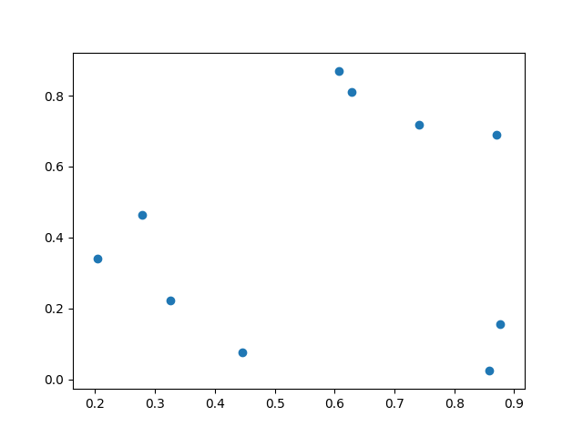
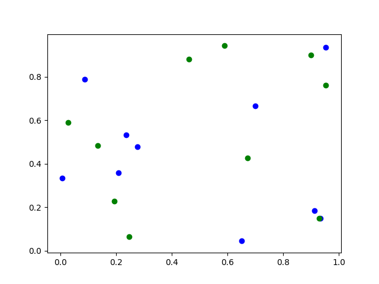
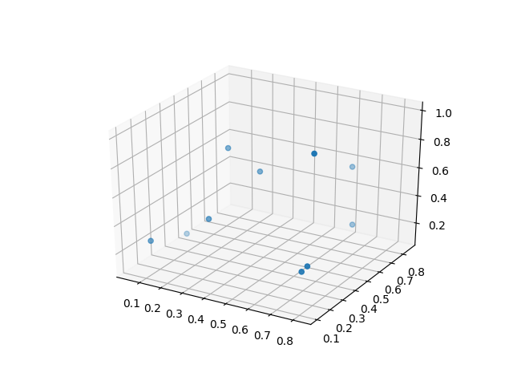

an iterative algorithm for clustering
this is the picture that I want to compress
it would be smaller if it used fewer colors
i'm going to use k-means to determine what colors it should use
import random
import numpy as np
from matplotlib import pyplot as plt
xs = [random.random() for x in range(10)]
ys = [random.random() for x in range(10)]
plt.scatter(xs, ys)
plt.show()

i'll need this to show which cluster a point belongs to
import random
import numpy as np
from matplotlib import pyplot as plt
xs = [random.random() for x in range(10)]
ys = [random.random() for x in range(10)]
plt.scatter(xs, ys, c="blue")
xs = [random.random() for x in range(10)]
ys = [random.random() for x in range(10)]
plt.scatter(xs, ys, c="green")
plt.show()

i'll want to plot the points from the picture in 3d with an axis for each color component of an RGB pixel
import random
import numpy as np
from matplotlib import pyplot as plt
from mpl_toolkits.mplot3d import Axes3D
fig = plt.figure()
ax = fig.add_subplot(111, projection="3d")
xs = [random.random() for x in range(10)]
ys = [random.random() for x in range(10)]
zs = [random.random() for x in range(10)]
ax.scatter(xs, ys, zs)
plt.show()

I don't know what the 111 is for
it's not usefull to be able to interact with the plot when it takes multiple seconds to render a frame
the alternative is to render frames offline with enough change in the viewing angle so that I can still see it with some perspective
I think that the apparent motion gives the graph more depth that just a static image
this is way too slow
write the data to a file and open it with gnuplot
it is way faster to generate the gif, it glitches though and I'm not sure why
let's get some speed. it'll be pretty easy to implement this in c++ and then we'll get to compare the speed to python
so far, we've only seen that actually drawing the plot is slow, i don't have an idea of how fast the algorithm runs but I have a hunch that it's going to be slow
and I bet I can get some pretty graphs out of this
i want to jump into running the code as soon as i finish each piece so I'll use googletest to run my nugets of code
mkdir build
cd build
cmake -DCMAKE_BUILD_TYPE=Debug ..
make kmeansTest
test/kmeansTest
#include "gtest/gtest.h"
#include "gmock/gmock.h"
#include "kmeans.hpp"
TEST(thisPasses, helloHello) {
ASSERT_EQ("hello", "hello");
}
TEST(thisFails,helloWorld) {
ASSERT_EQ("hello", "world");
}
Running main() from gtest_main.cc
[==========] Running 2 tests from 2 test cases.
[----------] Global test environment set-up.
[----------] 1 test from thisPasses
[ RUN ] thisPasses.helloHello
[ OK ] thisPasses.helloHello (0 ms)
[----------] 1 test from thisPasses (0 ms total)
[----------] 1 test from thisFails
[ RUN ] thisFails.helloWorld
/mnt/c/Users/richie/Documents/github/k-means/test/kmeansTest.cpp:14: Failure
Expected equality of these values:
"hello"
Which is: 0x43f9bf
"world"
Which is: 0x43fa11
[ FAILED ] thisFails.helloWorld (0 ms)
[----------] 1 test from thisFails (1 ms total)
[----------] Global test environment tear-down
[==========] 2 tests from 2 test cases ran. (1 ms total)
[ PASSED ] 1 test.
[ FAILED ] 1 test, listed below:
[ FAILED ] thisFails.helloWorld
1 FAILED TEST
i think i'm actually using graphics magick which just implemented the image magick api
the goal was just to open a picture and read it's contents which was much more difficult than I expected
as it turns out, when I read a pixel I get a value in the range of 0 to 65535 (or 1 << 16 - 1) but when i write the pixel it must be in the range of 0 to 1
I think that the range of the read value is determined by the bit depth
writing it as a decimal in the range of 0 to 1 makes it agnostic of the bit depth
#include <Magick++.h>
#include <iostream>
#include <string>
using namespace Magick;
using std::cout;
using std::endl;
int copyImage() {
InitializeMagick("");
Image image;
try {
image.read("/mnt/c/Users/richie/Documents/github/k-means/"
"resources/mnms.jpg");
image.modifyImage();
auto width = image.columns();
auto height = image.rows();
PixelPacket *pixels = image.getPixels(0, 0, width, height);
double x = 65535;
for (int i = 0; i < width * height; ++i) {
*pixels = ColorRGB(pixels->red / x, pixels->green / x, pixels->blue / x);
pixels++;
}
image.syncPixels();
image.write("/mnt/c/Users/richie/Documents/github/k-means/"
"resources/copy.jpg");
} catch (Exception &error_) {
cout << "Caught exception: " << error_.what() << endl;
return 1;
}
return 0;
}
todo - unit test kmeans with a picture